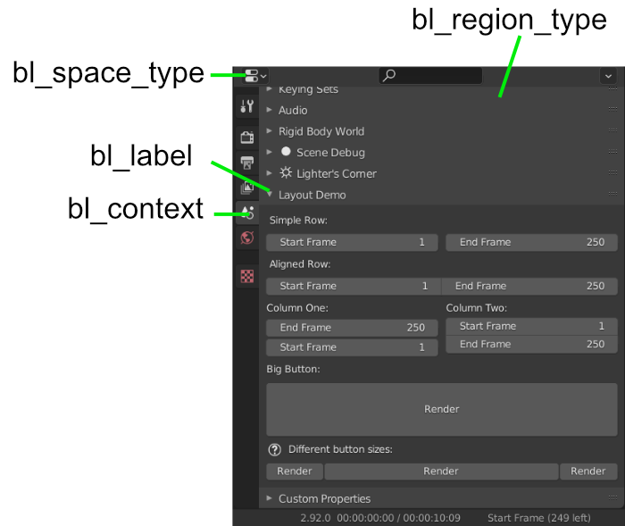
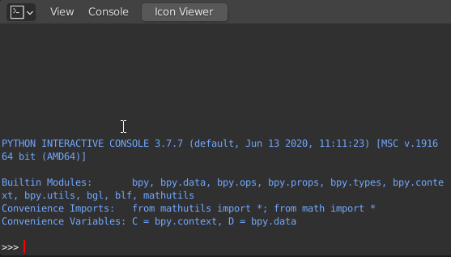
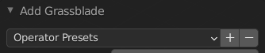

Übung 7 - User Interfaces
In Übung 3 haben wir uns schon mit der Erstellung von Operatoren beschäftigt und damit auch die ersten Schritte in Richtung GUI gemacht. In dieser Übung wollen wir unser eigenes Panel bauen und Operatoren zu Menüs hinzufügen.
- Wir fangen damit an, unser Skript aus Übung 4 zum Generieren von Graßhalmen in einen Operator innerhalb eines Addons umzuwandeln. Seht euch dazu nocheinmal Übung 3 an.
- Wir wandeln wir die Konstanten (BLADES, HEIGHT, ANGLE_BASE….) oben in die einsprechenden Properties um und transferieren den Code in die
executeMethode des Operators.- Fügt schließlich die
bl_infoFelder und dieregisterundunregisterfunktionen hinzu.
Panel-Klasse 
Nun brauchen wir ein Panel, von dem aus wir unseren Operator aufrufen wollen. Öffnet dazu zunächst in Blender das Script Template “UI Panel”. Dieses zeichnet im Properties Editor → Scene ein Panel.
Hier fällt uns nun einiges auf:
- Wie auch Operatoren, werden UI Elemente auch in einer Klasse definiert, die von
bpy.types.Panelerbt und über dieregisterundunregisterFunktionen registriert. - über überschreibbaren Klassenmember werden weitere Infos angegeben:
1class LayoutDemoPanel(bpy.types.Panel):
2 """Creates a Panel in the scene context of the properties editor"""
3 bl_label = "Layout Demo"
4 bl_idname = "SCENE_PT_layout"
5 bl_space_type = 'PROPERTIES'
6 bl_region_type = 'WINDOW'
7 bl_context = "scene"
| Name | Beschreibung |
|---|---|
| bl_label | Label des Panels |
| bl_idname | Name für den Zugriff über bpy |
| bl_space_type | In Welchem Editortyp ist das Panel (Liste aller typen hier: ) |
| bl_region_type | in welchem Bereich der UI dieses Editors |
| bl_category (nicht hier) | In welchem Tab erscheint das Panel |
| bl_context | In welchem Kontext erscheint das Panel (im Beispiel des Properties Editor: Tab)) |

draw & layout
- Statt der execute Methode gibt es hier nun eine
drawMethode, die das Panel an den oben angegebenen Ort zeichnet. - Das geschieht über das
self.layout des Panels. - in diesem Beispiel wird zunächst ein Label erstellt, dann eine Zeile (
row) - Der Zeile werden dann zwei Properties hinzugefügt. Dabei handelt es sich um in der API bereits existierende Properties der
scene-frame_endundframe_start(diese sind ansonsten in der Timeline als Start und End dargestellt)
Oft ist es hilfreich, den Quellcode existierender UI Elemente anzuzeigen (RMB → Edit Source), um herauszufinden, wie die UI aufgebaut ist.
1layout = self.layout
2
3scene = context.scene
4
5layout.label(text=" Simple Row:")
6
7row = layout.row()
8row.prop(scene, "frame_start")
9row.prop(scene, "frame_end")
- Wenn der Zeile der Parameter
align=Trueübergeben wird, werden die Properties darin direkt nebeneinander dargestellt.
1row = layout.row(align=True)
- Auch Spalten sind möglich, denen dann wie zuvor der row Elemente hinzugefügt werden können
1split = layout.split()
2
3col = split.column()
4col.label(text="Column One:")
- UI Elementen können auch Icons gegeben werden:
layout.label(text="My Label", icon="QUESTION") - Die Namen der Icons lassen sich einfach herausfinden, indem das vorinstallierte Addon “Icon Viewer” installiert wird. Dann erscheint dazu ein Button oben in der Python Console

Operatoraufruf
- Operatoren können dem Layout direkt, reihen oder spalten über deren Methode
operatorhinzugefügt werden. Dazu müssen wir lediglich den Pfad (bl_idname) des Operators übergeben.
1myrow.operator('mesh.add_grassblade'
2 text='Add Grassblades',
3 icon='OUTLINER_OB_HAIR'
4)
- Um den Operator in der UI mit angepassten Default-Werten aufzurufen, kann der Operatorbutton auch in einer Variable gespeichert werden, deren Properties dann angepasst werden.
1op_grass = myrow.operator('mesh.add_grassblade'
2 text='Add many Grassblades',
3 icon='OUTLINER_OB_HAIR'
4)
5op_grass.BLADES = 30
Operator Presets
Ein Preset Panel lässt sich dem Operator Menü sehr einfach hinzufügen, indem bl_options der Operatorklasse neben REGISTER und UNDO zusätzlich noch PRESET übergeben wird.

Operator zu existierendem Menü hinzufügen
- Eine Operatorklasse können wir einem existierendem Menü hinzufügen, indem wir zunächst eine Funktion erstellen, die dem
layoutdes übergebenen context wie bereits beim Panel einen Operator hinzufügt.
1def add_object_button(self, context):
2 self.layout.operator(
3 OBJECT_OT_add_object.bl_idname,
4 text="Add Object",
5 icon='PLUGIN')
- in der
registerFunktion fügen wir dann dem inbpy.typesgespeichertem Menü usere Buttonfunktion hinzu un VIEW3D_MT_mesh_addbedeutet hier View3d Editor → Menu Top → Add → Mesh- in
unregistermüssen wir den Eintrag auch wieder entfernen.
1def register():
2 bpy.utils.register_class(OBJECT_OT_add_object)
3 bpy.types.VIEW3D_MT_mesh_add.append(add_object_button)
4
5
6def unregister():
7 bpy.utils.unregister_class(OBJECT_OT_add_object)
8 bpy.types.VIEW3D_MT_mesh_add.remove(add_object_button)
Ressourcen & Tutorials zum Thema
| Art/Länge | Titel | Beschreibung | Quelle |
|---|---|---|---|
| Scripting for Artists #10: User Interfaces | Tutorial zu UI Panels | Blender Cloud | |
| Using Blender’s presets in Python | Offizielle Blender API Dokumentation | SINESTESIA | |
| UI Layout Dokumentation | Offizielle Blender API Dokumentation | Blender Python API Dokumentation | |
| Spacetype Dokumentation | Offizielle Blender API Dokumentation | Blender Python API Dokumentation |